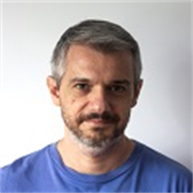
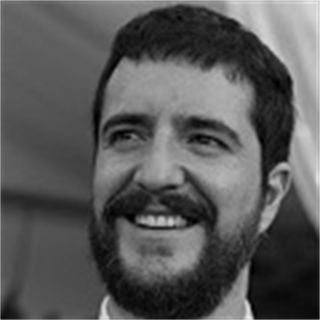
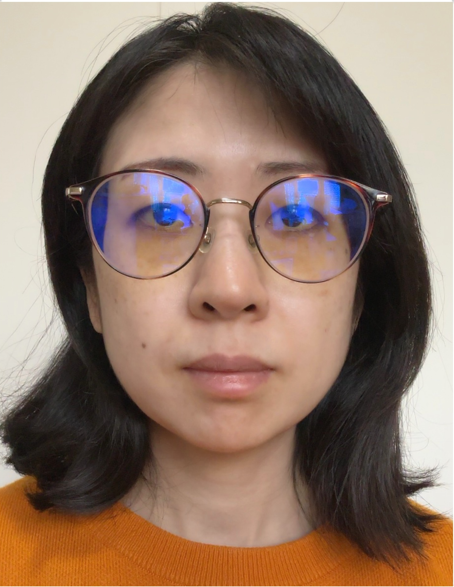
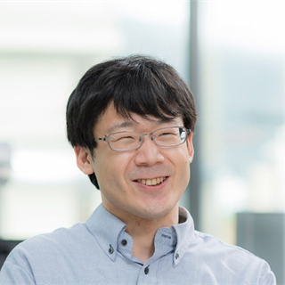
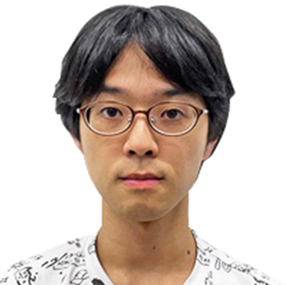
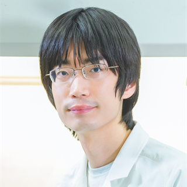

Computing Life: Supercomputing and AI for Biology
A conversation between Europe and Japan empowered by agentic research
2027年1月27日・28日
演題抄録締切 2026年12月20日 参加登録締切 2027年1月15日
開催概要
AIが生命科学研究の原動力となりつつある今日、計算科学と生命科学を融合する研究の発展には、国や機関の枠を越えた交流がますます重要になっています。スーパーコンピュータ「MareNostrum 5」を擁するバルセロナ・スーパーコンピューティング・センター（BSC-CNS）は、欧州を代表する高性能計算拠点の一つで、計算科学の幅広い分野で研究を行い、その成果を基礎研究、応用研究、教育に展開しています。本シンポジウムでは、BSC-CNSをはじめとする欧州の研究機関から研究者を迎え、ゲノミクス、バイオインフォマティクス、合成生物学、創薬、細胞シミュレーション、基礎医学などの分野で、AIや計算科学の手法を開発する、あるいは研究ツールとして活用する日本と欧州の若手・中堅研究者が一堂に会します。AI駆動型生物学が直面する課題について議論を深め、AIがもたらす生命科学の未来を共に考えます。
- 開催日
- 2027年1月27日（水）・28日（木）
- 会場
- 東京大学 本郷キャンパス 伊藤国際学術研究センター 伊藤謝恩ホール
- 開催形式
- 現地・オンライン ハイブリッド開催
- 対象
- 研究者・企業関係者をはじめ、どなたでもご参加いただけます。
- 主催・共催
-
- Barcelona Supercomputing Center（BSC）
- 大阪大学 蛋白質研究所（蛋白研セミナー採択事業）
- 科学技術振興機構（JST）創発的研究支援事業（FOREST）
- 理化学研究所（RIKEN）
- 共催（予定）：科学技術振興機構（JST）ARiSE（AI to Redesign Scientific Exploration）
- 参加費
- 無料
講演者
基調講演者
-
 Alfonso ValenciaBarcelona Supercomputing Center (BSC) · Spain
Alfonso ValenciaBarcelona Supercomputing Center (BSC) · Spain
Director, Life Sciences Department -
 洲崎 悦生順天堂大学大学院医学研究科 生化学・生体システム医科学（医学部生化学第二講座）
洲崎 悦生順天堂大学大学院医学研究科 生化学・生体システム医科学（医学部生化学第二講座）
主任教授 -
 Emmanuel Barillot TBCInstitut Curie · France
Emmanuel Barillot TBCInstitut Curie · France
Director -
 井元 清哉東京大学医科学研究所 健康医療インテリジェンス分野
井元 清哉東京大学医科学研究所 健康医療インテリジェンス分野
教授
講演者
-
 Anaïs BaudotMMG, Marseille Medical Genetics · France
Anaïs BaudotMMG, Marseille Medical Genetics · France
Researcher -
 Laurence CalzoneInstitut Curie · France
Laurence CalzoneInstitut Curie · France
Research engineer -

Jose CarbonellBarcelona Supercomputing Center (BSC) · Spain
Established Researcher -
 Davide CirilloBarcelona Supercomputing Center (BSC) · Spain
Davide CirilloBarcelona Supercomputing Center (BSC) · Spain
Leading Researcher -
 Alba JenéBarcelona Supercomputing Center (BSC) · Spain
Alba JenéBarcelona Supercomputing Center (BSC) · Spain
Scientific Coordinator -

Miguel VázquezBarcelona Supercomputing Center (BSC) · Spain
Group Leader -
 坪山 幸太郎東京大学 生産技術研究所 生体分子設計工学分野
坪山 幸太郎東京大学 生産技術研究所 生体分子設計工学分野
講師 -
神元 健児大阪大学 微生物病研究所 環境応答部門
教授 -

櫻井 利恵子理化学研究所 革新知能統合研究センター 遺伝統計学チーム
研究員 -

小島 諒介理化学研究所 生命機能科学研究センター マルチモーダルAI基盤技術研究チーム
チームディレクター -

角 俊輔東京大学 定量生命科学研究所 RNP生命工学研究分野
特任助教 -

吉永 正憲京都大学大学院医学研究科 医化学分野
助教
プログラム
プログラムは現在調整中です。詳細は決まり次第お知らせします。
参加登録
参加登録
参加費は無料です。現地参加・オンライン視聴のいずれも事前登録が必要です。2027年1月15日までにGoogleフォームからお申し込みください。
昼食は各自でご用意ください。伊藤謝恩ホール内での飲食はできません。
発表申し込み
本シンポジウムでは参加者からの発表も募集いたします。
発表を希望される方は、400 words（英語）以内の抄録を2026年12月20日までにGoogleフォームからご提出ください。提出方法の詳細はフォームをご確認ください。
現時点でAIを用いていなくても、今後AI研究者との連携を目指している研究もご発表いただけます。
ポスターボードサイズ：高さ240 cm × 幅90 cm
推奨ポスターサイズ：A0縦（幅84.1 cm × 高さ118.9 cm）
ポスター発表を基本とし、希望者の中から一部の演題を口頭発表に選出します。口頭発表は質疑応答を含めて15分です。口頭発表に選出されなかった演題はポスター発表をお願いいたします。
アクセス
伊藤謝恩ホール（伊藤国際学術研究センター）
東京大学 本郷キャンパス
東京都文京区本郷7-3-1
最寄り駅から
- 本郷三丁目駅・都営大江戸線徒歩6分
- 本郷三丁目駅・東京メトロ丸ノ内線徒歩8分
- 東大前駅・東京メトロ南北線徒歩12分
- 湯島駅・東京メトロ千代田線徒歩15分
JR中央線・総武線 御茶ノ水駅からは、東京メトロ丸ノ内線に乗り換え、本郷三丁目駅で下車してください。